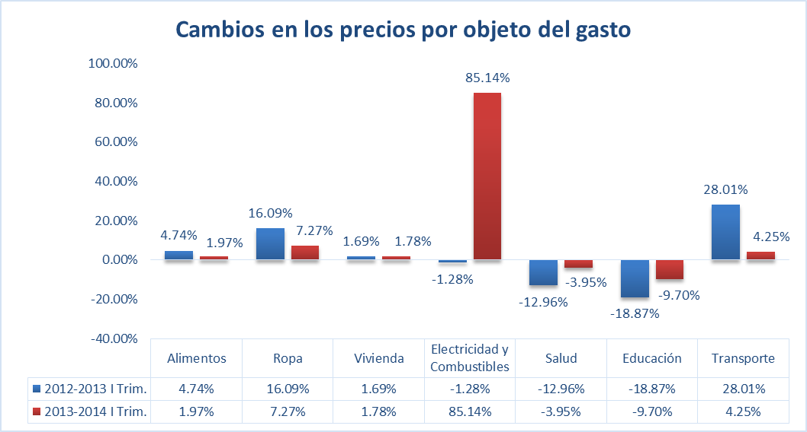

Durante el primer trimestre del 2014 el municipio de Torreón, Coahuila registró una variación porcentual de 1.66 en el Índice Nacional de Precios al Consumidor (INPC), mientras que la variación nacional fue de 1.43%. La inflación registrada en Torreón con respecto al primer trimestre del año pasado es de 3.78%, muy similar a la inflación nacional de 3.76% (INEGI, 2014). Una inflación mesurada como ésta incentiva la producción y disminuye el desempleo. Sin embargo, hay otros factores que deben tomarse en cuenta, como el nivel de ingresos, las tasas de interés y las causas de la inflación.
La relación inflación-ingreso es relevante, ya que si la primera incrementa y el segundo se mantiene constante o disminuye, el poder adquisitivo de la población se reduce afectando la planta productiva. Algo similar ocurre con las tasas de interés, pues si éstas no se indexan se desincentiva el ahorro.
Una inflación mal controlada, disminuye la competitividad de una región al generar factores de incertidumbre. De ahí la importancia de contener la inflación a nivel de las ciudades más competitivas. En la siguiente tabla se muestran los aumentos en el INPC de marzo de 2013 a marzo de 2014 para Torreón y algunas otras ciudades que integran el cálculo del INPC:
| Ciudad | Inflación 2013-2014 |
|---|---|
| Puebla | 2.53 |
| Hermosillo | 2.93 |
| Guadalajara | 3.09 |
| Morelia | 3.27 |
| Chihuahua | 3.41 |
| Durango | 3.52 |
| Monterrey | 3.61 |
| Nacional | 3.76 |
| Torreón | 3.78 |
| Cd. Juárez | 3.91 |
| Cd. de México | 4.18 |
| León | 4.28 |
| Acuña | 4.68 |
¿Cuáles productos y servicios han aumentado sus precios en Torreón?
Según datos de INEGI aunque los precios en el municipio tienden a subir en el largo plazo, ciertos productos y servicios han disminuido en los últimos dos años. En la gráfica inferior se observan los cambios porcentuales de algunos productos y servicios en el periodo señalado:

Como se muestra en el cuadro las tasas inflacionarias fueron considerablemente menores a las del año pasado, a excepción de las tasas de electricidad y combustibles en donde los precios se dispararon 85.14% después de haber disminuido 1.28%.
Podemos concluir que la inflación de Torreón no está dañando el poder adquisitivo de los consumidores. En términos generales la inflación de Torreón se encuentra estable, lo cual genera certidumbre tanto a planta productiva local como extranjera.